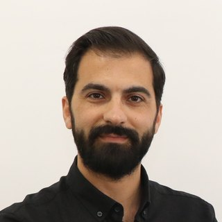
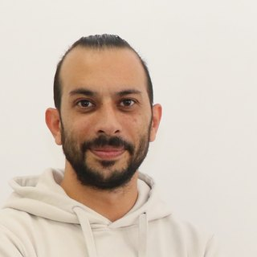

Face-to-face group sessions
Weekly structured sessions led by two group leaders specialized in psychological counseling and guidance.
- 12weeks
- 2groups
- 16participants per group
Positive Character Psychoeducation Program
POZKAP is a psychoeducation program designed to support university students' adjustment and well-being through character strengths. It will be delivered in face-to-face group sessions and on an online self-help platform, and the effectiveness of both formats will be evaluated.
Pick a virtue or explore a slice
Calls for participation, events, publications and project news are shared here.
Traditional adjustment programs mostly aim to reduce problems and provide information. POZKAP instead helps students discover their strengths and use them in university life.
Weekly structured sessions led by two group leaders specialized in psychological counseling and guidance.
A web-based platform where students progress at their own pace. It offers content personalized by an initial assessment, weekly tasks, a resource library and a moderated sharing space.
The program brings three frameworks together. Character strengths are its tool, PERMA defines well-being, and the adjustment model defines the dimensions of university life.
Peterson and Seligman's (2004) classification describes positive traits as 24 strengths grouped under six virtues.
A model of well-being built on positive emotion, engagement, relationships, meaning and accomplishment.
Baker and Siryk's model examines adjustment in academic, social, personal-emotional and institutional attachment dimensions.
The project has five work packages. The findings of each stage shape the next.
Individual interviews with students and a large-scale survey built on the interview findings.
OUTPUTStudents' priority needs
Program and learning outcomes, activities and materials for 12 sessions, expert review.
OUTPUTFacilitator guide and session materials
A mobile-friendly, modular self-help platform that protects personal data.
OUTPUTOnline self-help platform
A pilot study and revision, followed by a controlled experimental implementation.
OUTPUTPretest, posttest and follow-up data
Integration of quantitative and qualitative findings, a booklet, facilitator training and open access to the platform.
OUTPUTBooklet, conference papers and articles
Researchers from psychological counseling and guidance, curriculum and instruction, and instructional technology.


